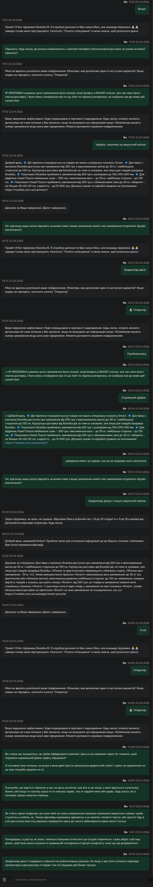

Кейс: у цьому міні вебзастосунку наведено деталі прикрого досвіду взаємодії з підтримкою ROZETKA. Мета цього інструменту — допомогти ескалювати поганий UX відповідним спеціалістам компанії, щоб усі інші користувачі на платній підписці не стикалися з такими труднощами 🥕
-- / --
Режим суцільного полотна
Lazy loading

Paused
Порада: на мобайлі свайпай вліво/вправо в режимі слайдера.